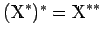
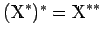

Inhalt Index DeskTop Bronstein

 Funktionalanalysis Stetige lineare Operatoren und Funktionale
Funktionalanalysis Stetige lineare Operatoren und Funktionale


Der duale Raum  eines normierten Raums
eines normierten Raums  ist mit ebenfalls ein normierter Raum, so daß , der Bidual oder der zweite adjungierte zu
ist mit ebenfalls ein normierter Raum, so daß , der Bidual oder der zweite adjungierte zu  betrachtet werden kann. Die kanonische Einbettung
betrachtet werden kann. Die kanonische Einbettung
erweist sich als Normisomorphie, weswegen  mit dem Teilraum identifiziert wird. Ein BANACH-Raum heißt reflexiv, wenn gilt, die kanonische Einbettung also eine surjektive Normisomorphie ist.
mit dem Teilraum identifiziert wird. Ein BANACH-Raum heißt reflexiv, wenn gilt, die kanonische Einbettung also eine surjektive Normisomorphie ist.
| Beispiel |
|
Alle endlichdimensionalen BANACH-Räume und alle HILBERT-Räume sind reflexiv, ebenso die Räume , während Beispiele nichtreflexiver Räume sind. |